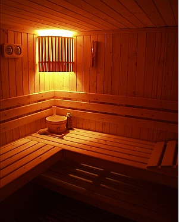
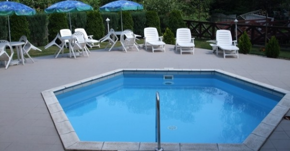
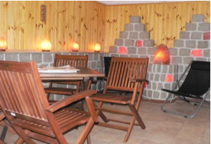
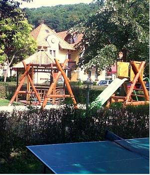
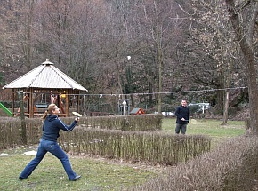
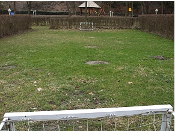

Szállodánk által nyújtott szolgáltatások
Szauna
A Hotel rendelkezik finn szaunával, melyet 14 és 22 óra között minden szállóvendég díjmentesen használhat. Az 5-6 fő befogadására alkalmas szauna előterében a zuhanyzók és az öltöző szekrények biztosítottak. A bejárat előtt lévő hideg vizes medence merülő medenceként teszi teljesebbé a szaunázás élményét.
A finn szauna jótékony hatásai:
- segíti a szervezetet a salakanyagok kiürítésében
- hatékony immunerősítő és érregeneráló hatású
- a gőzfürdővel ellentétben nem termelődnek, hanem elpusztulnak a baktériumok, vírusok
- javítja az anyagcsere folyamatokat
- fokozza a szervezet vérellátását
- segít a lappangó betegségek felszínre hozásában, legyőzésében
Medence
A vízforgatóval felszerelt kültéri medence szezonális jelleggel várja a hűsölésre vágyó vendégeket. Az 5 méter átmérőjű, 1 méter mély medence főleg a gyermekek részére nyújt igazi élményt, de a medence körül elhelyezett napozóágyakon a felnőttek is kellemesen kikapcsolódhatnak a pár méterre lévő Szinva patak halk csobogására.
Sókamra
Kerékpáronként 5.000- Ft. a kaució, mely a bicikli visszavételekor visszajár, amennyiben az átadáskori állapotnak megfelelően kapjuk vissza a kerékpárt. A kerékpárokat 8 és 20 óra között lehet bérelni. 12. életévét betöltött bérelhet biciklit, de fiatalkorú csak felnőtt kísérővel. Részletek a recepción.
A szálloda recepciója alatt található a mesterségesen kialakított „sóbarlang”, mely az egészségre jótékony hatásai mellett, a nyári hónapokban – pinceklímájának köszönhetően – kellemes felfrissülést biztosít. Az ajánlott terápiás időtartam: 30-40 perc/alkalom.
Kerékpár bérlés
A kerékpárok bérleti díja 3.000.- Ft./nap(max.: 8:00-20:00-ig) biciklinként.

Szállodánk családbarát környezetet kínál. Gyermekjátszóterek, családi szobák, valamint különféle gyermekprogramok is rendelkezésre állnak, hogy a legkisebbek is jól érezzék magukat nálunk.
Pihenőkert-játszótér
  Játszótér: a kertben a gyermekek szórakozására játszóteret alakítottunk ki, ahol csúszda, hinta, valamint homokozó várja őket. A szülőknek 8 fő befogadására alkalmas szanetli van elhelyezve a játszótéren. A balesetek elkerülése érdekében a játszóteret kizárólag 12 éven aluliak vehetik igénybe, szülői felügyelet mellett.
Pingpong: rendelkezünk pingpongasztallal és a sporthoz szükséges valamennyi eszközökkel.
Mini foci: a pihenőkertben található a 9×16 m-es mini foci pálya a futball szerelmesei részére.
Tollaslabda: a kertben tollasozásra is nyílik lehetőség.
Bababarát
Előzetes kérésre díjmentesen biztosítunk a szobákba utazóágyat, illetve fürdetőkádat a babák részére. A reggeliző helyiségben etetőszékek állnak rendelkezésre, valamint mikrohullámú sütő is található a bébi étel melegítésére, amit napközben a recepción is kérhetnek. A szállodai televíziókba – lehetőség szerint – programozva van mesecsatorna.